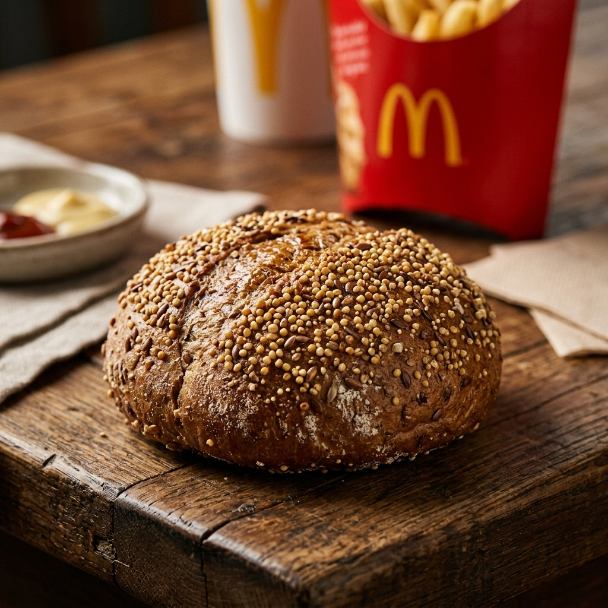

By Subashri M
Proprietor – SNS Global TradersWhen McDonald's Puts Ragi in a Burger Bun, You Know Millets Have Arrived
I'll be honest. When I first heard that McDonald's India had launched a burger bun made with Indian millets, I had to read it twice.
Not because I was surprised that millets are good enough for it. I've always known that. But because seeing a global fast food chain put Bajra, Ragi, Jowar, Proso, and Kodo into their burger bun and put it on the menu across India, well, that's a different kind of moment. That's millets going fully mainstream. And for those of us who have been working in this space for years, it feels like a long time coming.

The bun was developed in collaboration with CSIR-CFTRI, a respected Indian food technology research institute, and it makes up 22 percent of the composition using five different millets. Customers can order it with any burger including the McAloo Tikki and McSpicy Paneer. For an extra ten rupees, you get a burger with genuine nutritional value built right into the bun.
Now think about what that actually means.
McDonald's is one of the most recognised food brands in the world. They are extremely careful about what they put on their menu. They test extensively. They think about cost, shelf life, texture, taste, scale. And they chose Indian millets. That decision did not happen by accident.
Why this matters for global buyers
If you are a food manufacturer, importer, or brand looking at Indian millets right now, this news should tell you something important.
The mainstream food industry has validated these grains. Not health bloggers, not niche organic stores, not government reports. McDonald's. And the five millets in that bun, Bajra, Ragi, Jowar, Proso, and Kodo, are exactly the grains that India grows in large volumes and exports to the world.
At SNS Global Traders, we export all of these. We have been doing it since 2021.
And what we are seeing right now in our buyer conversations matches exactly what this McDonald's launch represents. Food companies are moving millets from the specialty aisle into their core product lines. The question is no longer whether millets have a place in global food. The question is whether your supply chain is ready for the demand that is coming.
A crop that was always this good
Here is something worth saying clearly. Millets did not suddenly become nutritious because a fast food chain noticed them. They have always been this way.
- Ragi has more calcium than almost any other cereal grain.
- Bajra is rich in iron and magnesium.
- Kodo and Proso are naturally gluten-free and gentle on digestion.
These are not new discoveries. Indian farmers have known this for thousands of years. What is new is that the global food industry is finally catching up.
The global millet market is currently valued at USD 13.22 billion and is growing steadily. Algeria and Germany are emerging as new high-growth markets for Indian millet exports alongside the already strong demand from the UAE, Saudi Arabia, Nepal, and the United States. India accounts for over 40 percent of the world's total millet production. The supply is here. The quality is here.
What we are doing at SNS Global Traders
We are a small, owner-run export business based in Tamil Nadu. We don't have a massive trading floor or a large corporate team. What we do have is direct access to quality Indian millets, solid export documentation, and a genuine commitment to every shipment we send out.
If the McDonald's news has you thinking more seriously about sourcing Indian millets for your product line, I would love to have that conversation. Whether you need Finger Millet, Pearl Millet, Foxtail Millet, Kodo Millet, Barnyard Millet, or Browntop Millet, we can work with you on specifications, packaging, and volumes.
Feel free to reach out. We respond to every inquiry personally.